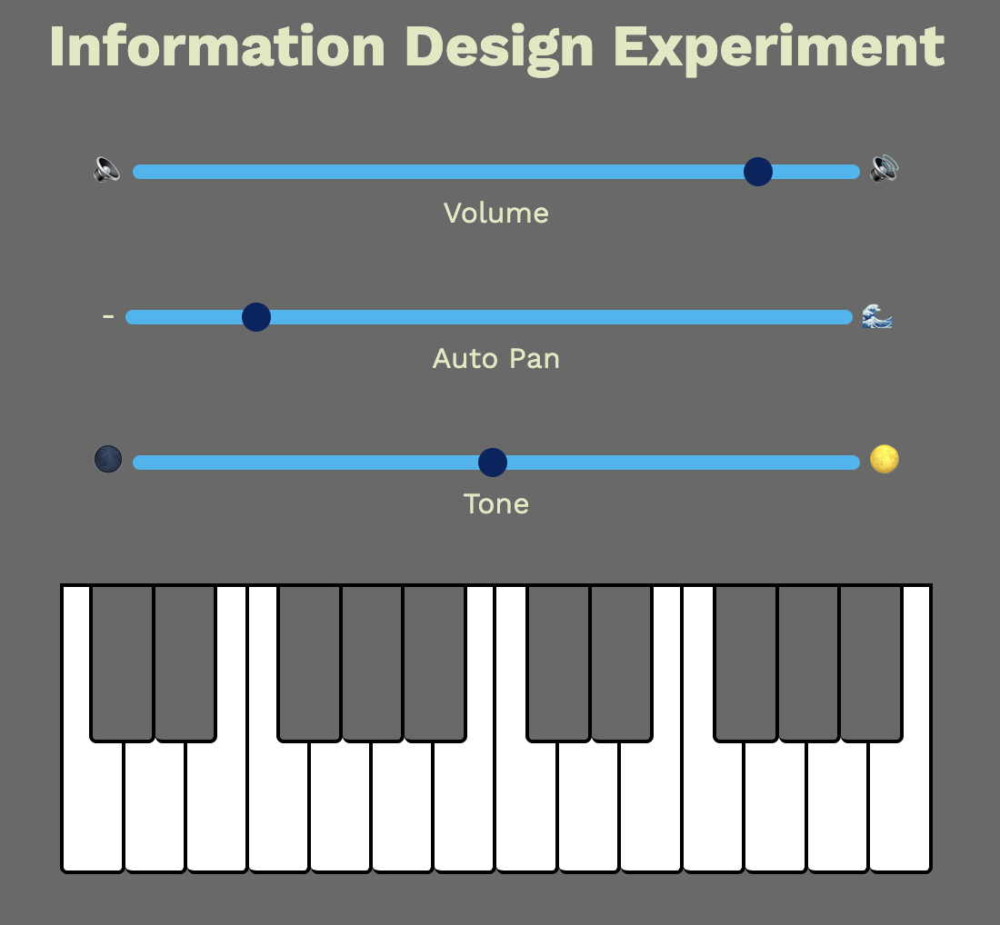
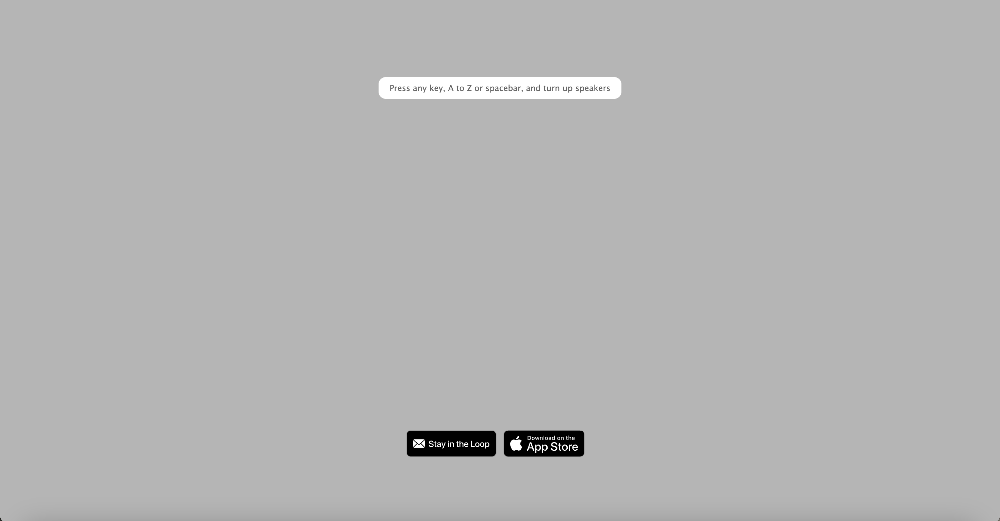
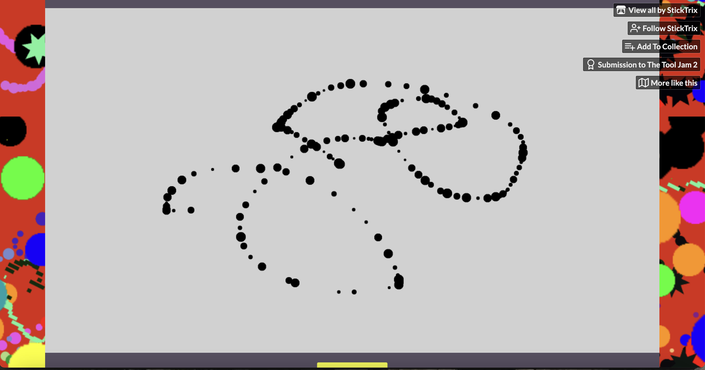
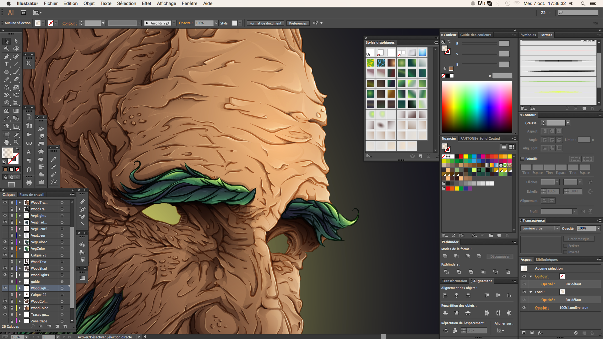
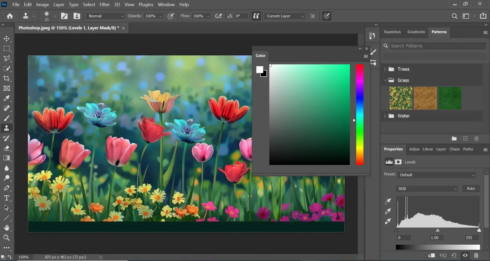

s4164444
Hello, my name is Hao Mei, call me Hao is fine, and I came from Jiangsu China. I came to Digital Media because I like drawing, designing, and I'm interstd in UI and UX designing.
I don't have a favourit emoji, I just use everything. I like to use sketchbook and photoshop to draw and illustate.
My coding experence is still growing, the first time I touched on coding was last year in studio class.
This is the link to my Github page: Link to my GitHub
After I experienced all these three different types of experiments, I had my initial idea for my project. I want to create a project that focus more on visual less on audio, this project will be more focused on feedback design and part of mapping design.
As we done in the feedback design experiment, feedback will be presented from mouse hover on the button, and a tone will activate and make a sound to tell user so they can make sure they have clicked on the button and the website have read it. It is how the system replies to the user.
Mapping design experiment created a tool bar with different colour choices which users can choose a colour and generate coloured circles randomly in the stage. It is the relation between user input and system output, what result will be caused by the action and is it logical or not.
Information design experiment labels 3 different adjustable unnamed ranges of the piano with text and emoji, which it helps user to understand the meaning of each action.

Mute and high volume emoji to represent volume.
"-" and wave emoji to represent auto pan.
Moon emoji to represent dim to bright.
In this project, I’m trying to explore more of different degrees of feedback and the effect on users, some mapping design layout, and will users understand the relation between buttons if there were very less or no information was provided.
This project’s purposed on observe how users react on different level of feedback. This project will be highly focusing on feedback design principle. This web will present multiple buttons on the single page, every button will have different degree of visual feedback when click or hover on it. Some buttons show almost no change, some will change colour slightly, and some will have size changed or highlight effect.
The focus wasn’t on clicking on different buttons, but rather on getting users notice how they felt when clicking on the buttons, allow users to explore how long does users take to realise their action has been received by the system? And what’s the relation between the result and different degree of feedback provided from the web was the focus.
The value of this project is to show how feedback is important, and what degree of feedback would do the best job. When there is no feedback, it can make people click multiple times or feel unsure about the action been received or not, while too much feedback can be distracting and annoying.
To be able to achieve this, putting buttons with different feedback together in the same web page helps user to find the prefer degree, which is feedback that is noticeable enough and not too annoying.
Refer to the creative tools from provide examples, “Patatap – Jono” has inspired me with this idea, which it has a very relative, playable and string audio feedback, every key from a to z can create a unique beat, with relative animation pop up with the key press down, provides a smooth experience, only information was text “press any key, A to Z or spacebar, and turn up speaker”, which provides an environment for users to focus on each audio and it’s feedback design.

“Useless painter – StickTrix” This isn't the effect I wanted. The cursor isn't changing on the canvas at all, and there's no further information based on the canvas. Following the instructions below, changing the brush shape didn't produce any noticeable difference on the canvas. Until I confirmed the drawing on the canvas, I couldn't tell if the brush switch had been successful. I don't think this is good feedback design.

This project if a minimalist experiment. The interface is simple as just buttons and visual responses (maybe some notice like “press me” on the buttons to inform users to click an activate the feedback) so users can focus on the feedback itself.
Because this is a website project, and due to the style I chose, I need to control the amount of information content on the website, and try to incorporate some information design elements to help users understand how to interact with the site without affecting usability.
Creative tools like Photoshop and Illustrator don't deliver the effect I want. First, their interfaces are too cluttered, and second, they're too large to run on web pages.

